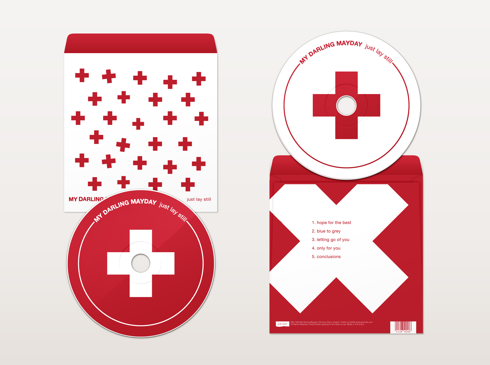
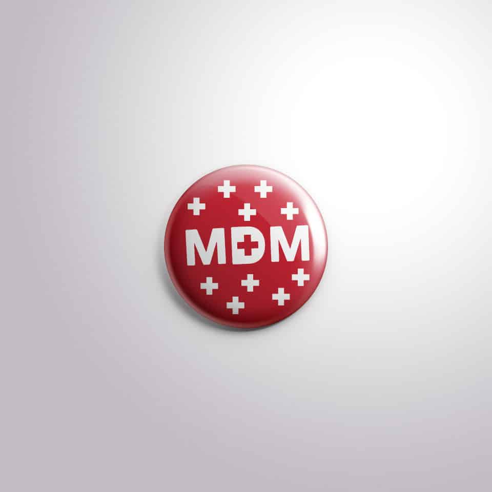
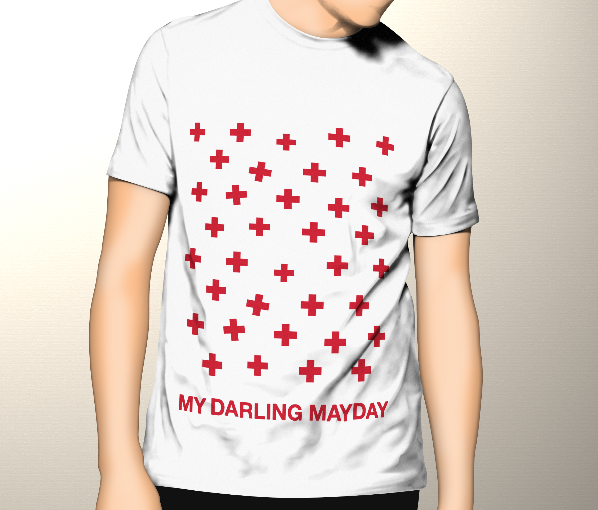
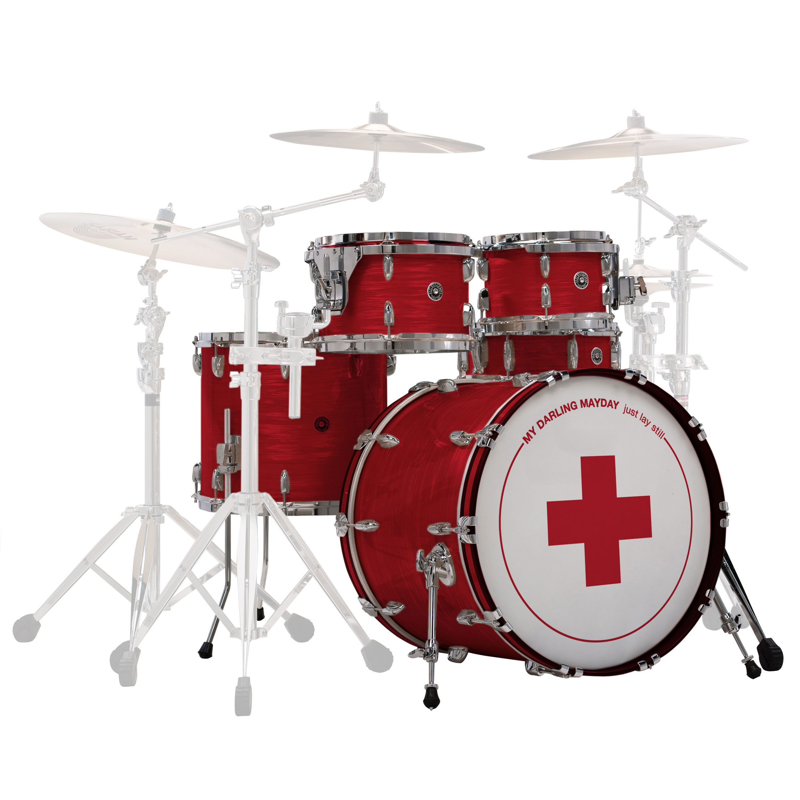

← Back to Work


Personal Project
My Darling Mayday
My Darling Mayday was a Pop-Punk Band from Stockton, California. After five years of hiatus the group has decided to reform for a few select dates. I was tasked with creating designs for their unreleased album "Just Lay Still" as well as several other promotional items such as: shirts, stickers, and buttons.



